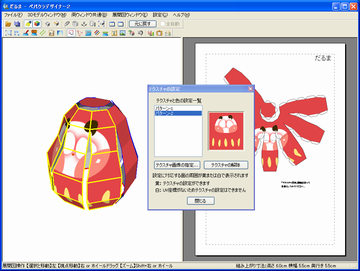
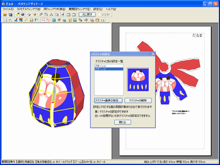
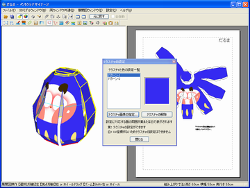

3Dモデルに貼りつける画像のことをテクスチャと呼びます。
このテクスチャを貼り替えることで、形状が同じでも違うデザインの作品を作り上げることができます。
リストの中から[パターン-2]を選ぶと、3Dモデルウィンドウのだるまのモデルに黄色い枠線が表示されます。[だるま.pdo]には2種類のテクスチャが施されていますが、黄色い枠線の部分に[パターン-2]のテクスチャが貼られている事を示しています。

対応する面が黄色い枠線で表示されます
[テクスチャ画像の指定]ボタンを押し、サンプルデータの「だるま用bmp」フォルダの中から[だるま(青).bmp]を選びます。赤いだるまのテクスチャが青いだるまのテクスチャに差し替わりました。

選択した部分のテクスチャが差し替わりました
同様に[パターン-1]に[単色(青).bmp]を読み込むと背中側のテクスチャーも差し替わり、青いだるまの完成です。

テクスチャの変更の完了